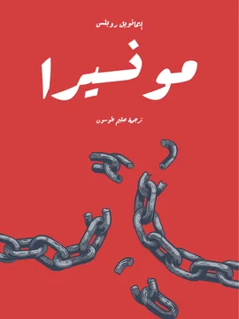

مونسيرا

قراءة عربية أصلية محددة النطاق في الصفحات 9 إلى 14 من ملف PDF المرتبط، وليست تلخيصا كاملا للكتاب. نناقش ما تدعمه هذه المقاطع فقط.
مونسيرا: بوليفار يفلت مرة أخرى
في المشهد الأول يتناقش ثلاثة ضباط إسبان بحرارة: هرب بوليفار مرة أخرى، ولا شك أن هناك خيانة؛ فقد أُخطر أن إزكويردو سيأتي في الفجر ليقبض عليه حيث لجأ، ولم يعرف بمكانه سوى مدعوي الجنرال؛ يوجد خائن في هيئة الأركان. ويحكون عن إزكويردو كاد يجن؛ فللمرة الثانية يفلت بوليفار من قبضته، وعن أيامه في الكلية الحربية حين أحب فيكونتيسة لم تحبه فأقسم أنها ستحبه قسرًا، لكنها تزوجت برتغاليًّا كاد يقضي عليه في مبارزة. وفي المشهد الثاني يدخل ووجهه يقطر حقدًا: «أرأيتني أغفر لأحد قبل ذلك؟ أبدًا!»، ويعلن أن لديه مفاجأتين للجنرال: خبر فشله واسم من سخر منه. ويحكي أنهم وصلوا في الفجر إلى مزرعة بوليفار المريض فراحوا يبيدون ويحرقون، وحين داهمت النيران أجران القمح خرج زنجي من تحت القش، فداعب جندي بطنه بطعنات خفيفة حتى حكى قصته: أخطر أحدهم بوليفار منتصف الليل وربطوه في السرج، وأين اختبأ لا يعرف، فأمر بشنقه. ويقدر أنه سيختبئ نهارًا ويفر ليلًا، وأرسل دوريات في اتجاهين: بويلبا ليجمع أنصاره، أو الشاطئ ليقلع إلى كوراسا حيث يلتقي بأصدقائه.
زاوية وحدود القراءة
قراءة موجزة من ص ٩ إلى ص ١٤ من أصل ٦٦ صفحة، تعرض مطلع الفصل الأول، لا الكتاب كاملًا.
الطبعة والقراءة
هذه النسخة من الكتاب صادرة ومتاحة مجانًا بموجب اتفاق قانوني بين مؤسسة هنداوي وأسرة السيد الأستاذ حليم طوسون.
تنزيل PDF المجاني ↓ القراءة والمصدر الرسمي ↗